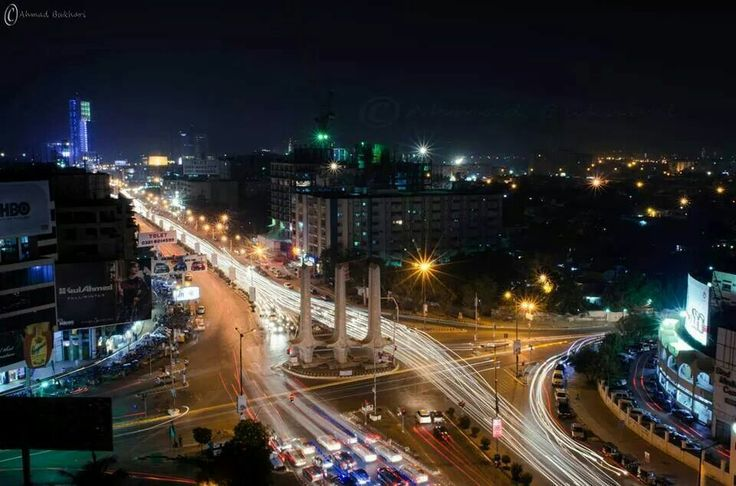

Karachi.
Karachi, the largest city in Pakistan, is a vibrant and dynamic metropolis that serves as the country's economic, cultural, and industrial hub. Located on the Arabian Sea coast, Karachi has a rich history that spans centuries, making it a city of contrasts where modernity meets tradition.
-
History:
Karachi, the largest city in Pakistan, is a vibrant and dynamic metropolis that serves as the country's economic, cultural, and industrial hub. Located on the Arabian Sea coast, Karachi has a rich history that spans centuries, making it a city of contrasts where modernity meets tradition.
-
Cultural Diversity:
One of Karachi's most significant features is its cultural diversity. People from various ethnic backgrounds, including Urdu-speaking Muhajirs, Sindhis, Punjabis, Pashtuns, and Baloch, coexist in this bustling city. This diversity is reflected in the city's cuisine, festivals, and traditions. From the vibrant markets of Saddar to the upscale neighborhoods of Clifton, Karachi is a melting pot of cultures.

-
Resilience and Dynamism:
The nickname "City of Lights" is a testament to Karachi's resilience and dynamism. Despite facing challenges, the city continues to evolve, adapt, and shine. The entrepreneurial spirit of its residents, the fervor of its artists, and the determination of its workforce collectively contribute to the city's luminous character.

| Famous Places |
Famous foods |
| Mazar-e-Quaid |
sweets:dilpasand |
Contact: 03412342629
E-Mail: okashanadeem@gmail.com
linkedin: okashanadeem